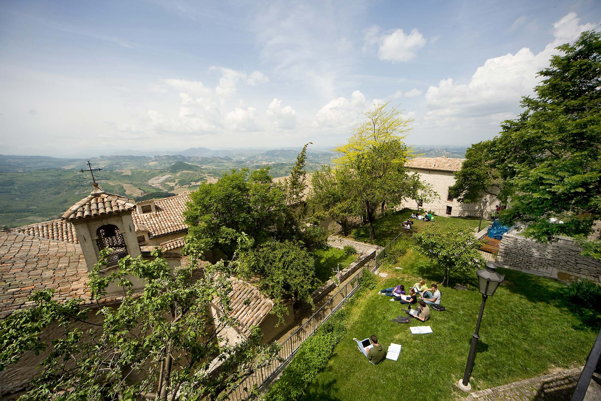
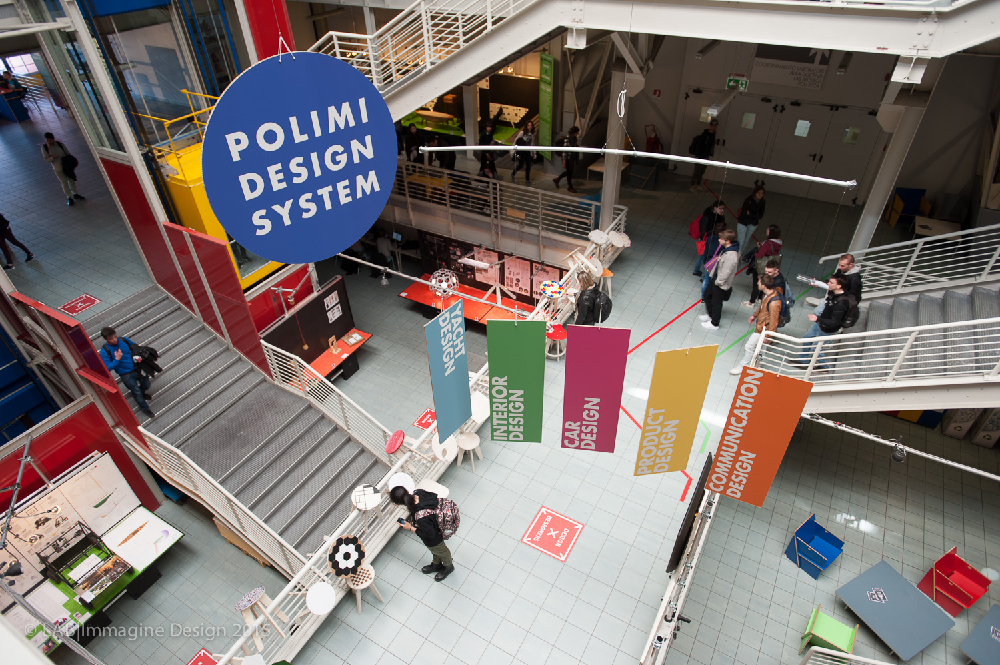
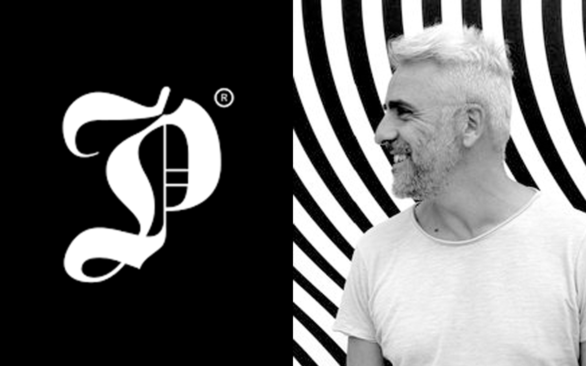
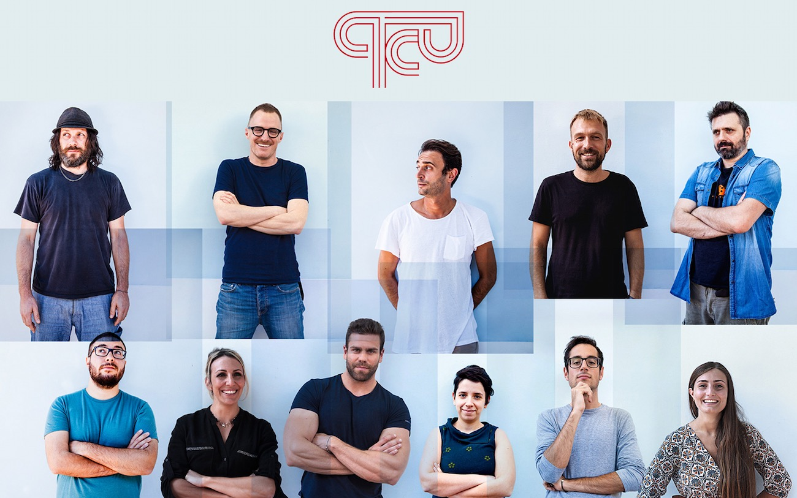

About
Hi there! This is me (and the face that you'll eventually see at work if you hire me). I'm Federica, a multidisciplinary visual designer passionate about every aspect of design but with a fondness for digital and UX/UI design.
Study path
I live in a peaceful town called Fano (Marche region, Italy) but the desire to learn and try new things eventually led me first in San Marino, where I got my bachelor's degree in Product and Multimedia Design (2017) at UNIRSM  and then in Milan, where I took the master's degree in Communication Design (2021) at Politecnico di Milano. 
Work experiences
During these years I've had the chance to work with great studios like Pitis e Associati  (Milan, 2016) and Quartopianocomunicazione  (Pesaro, 2018).
Free time
In my free time you can find me
listening to music
or going to concerts of
musicians that usually nobody knows.
If you'd like to get to know more about me and my work, contact me!
Thank you for stopping by.
— Federica C.